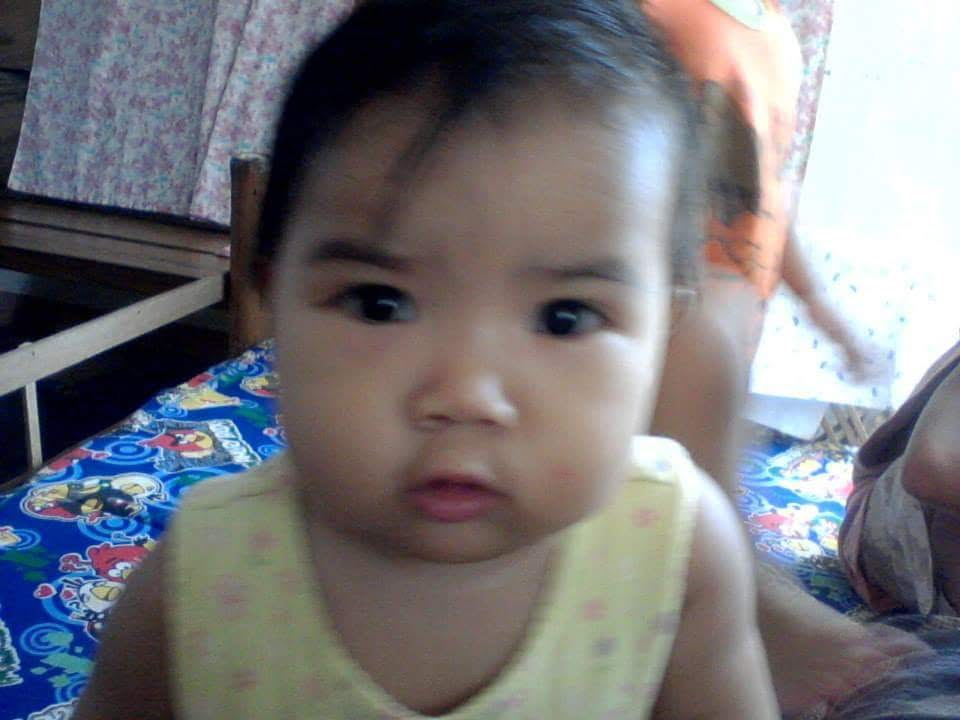
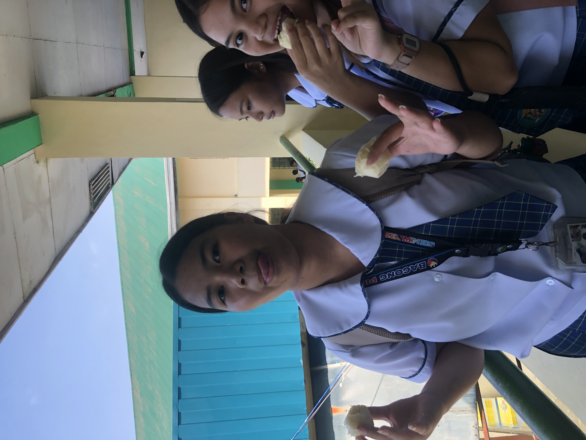

<!DOCTYPE html>
<html>
<head>
<title>my multimedia gallery</title>
</head>
<body background="mybg.jpeg">
</html>


<h1 style="background-color: pink; padding: 10px; width: fit-content;">when i was a baby</h1>

<p style="background-color: pink; padding: 5px; width: fit-content;">this is me when i was a baby cute and always crying</p>

<h1 style="background-color: pink; padding: 10px; width: fit-content;">my toddler days</h1>

<p style="background-color: pink; padding: 5px; width: fit-content;">this is me when i was kid: my toddler life just enjoying life</p>

<h1 style="background-color: pink; padding: 10px; width: fit-content;">how i am today</h1>

<h1 style="background-color: pink; padding: 5px; width: fit-content;">this is me now in mg teenage days</h1>


<br><br>

<!-- AUDIO -->
<audio controls>
  <source src="pahintulot.mp4" type="audio/mpeg">
</audio>
<p style="background-color: pink; color: black; padding: 5px; width: fit-content;">My Favorite Song - Pahintulot by shirebound</p>
<br><br>

<!-- VIDEO 1 - LANDSCAPE 800x600 -->
<video width="800" height="600" controls poster="my.webp" style="max-width: 90%; height: auto;" controls>
  <source src="medance.mov" type="video/mp4">
</video>
